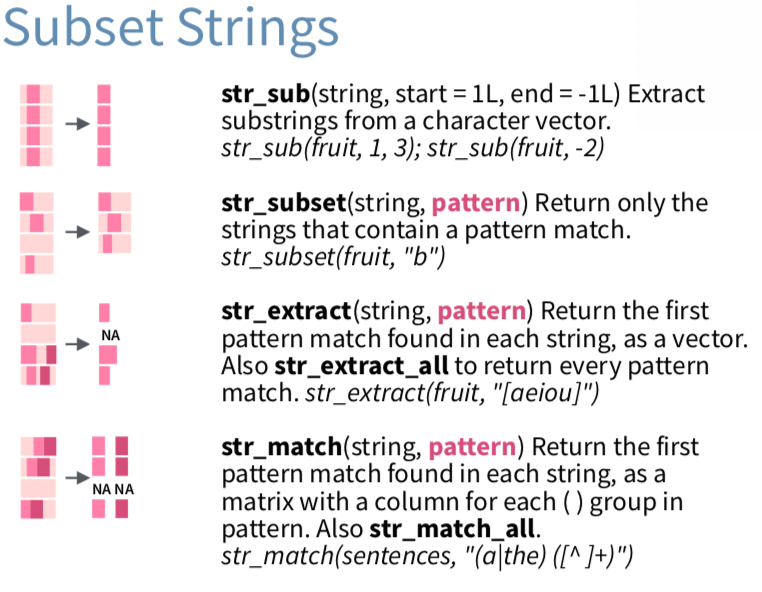
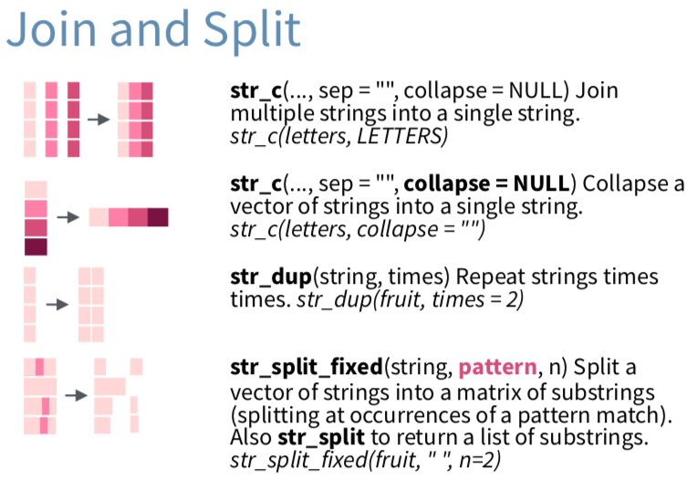
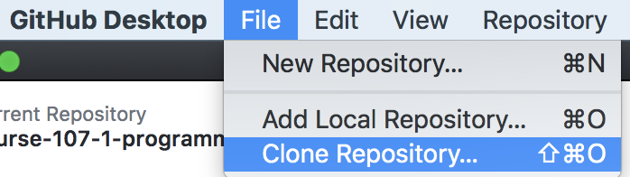
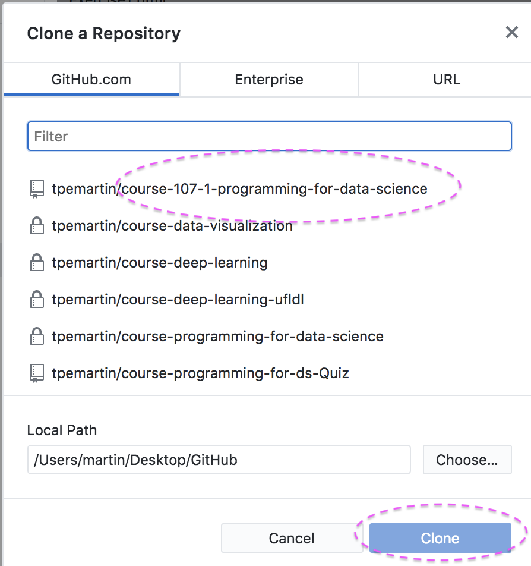
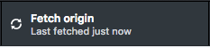
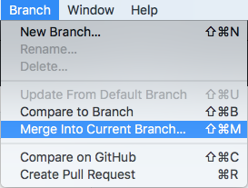
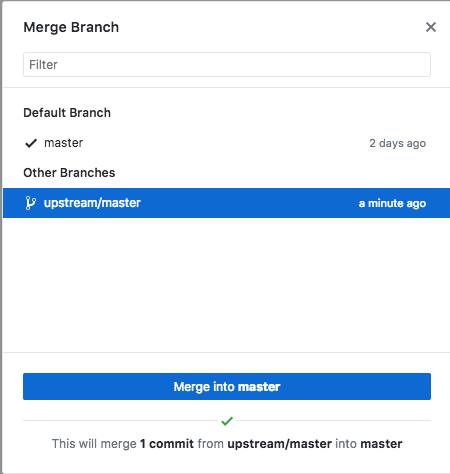
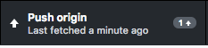

第 4 章 R Basics
4.1 主要參考書籍
R for Data Science: abbreviation RDS.
資料科學與R語言 by 曾意儒: abbreviation 曾意儒.
4.2 Numeric (vector)
a<-5
a2<-5LaVector<-c(5,6,7)
a2Vector<-c(5L,6L,7L)使用class()查詢上述物件類別。
Operations on numeric objects
4.3 Character/String (vector)
b<-"你好"bVector<-c("你好","How are you?")使用class()查詢上述物件類別。
Understand function usage

help
Take class() as an example
- class{base}
Documentation
Description
Usage
Arguments
Details
Examples
Type ?class in console window will also work.
4.4 Factor
Factors are used to work with categorical variables, variables that have a fixed and known set of possible values.
資料來源：經濟系大學部98_105學年度入學學生
library(readr)
student <- read_csv("https://raw.githubusercontent.com/tpemartin/course-107-1-programming-for-data-science/master/data/student.csv")
library(dplyr)
library(magrittr)
student %<>% mutate(
身高級距=cut(身高,c(0,150,155,160,165,170,175,180,185,200)))入學年、出生地、性別、身高、身高級距，何者是類別變數（即具有分類的意義）？
若資料有「學號」變數，你覺得它應該是什麼class？
Change class
as.numeric(), as.character(), as.factor()
as.factor(student$出生地) -> student$出生地將剩下的變數都轉成適當的class。
Factor has levels.
levels(student$出生地)Count
table(student$出生地)Ordered factor
入學年、出生地、性別、身高、身高級距，其中那些變數不同類間可以排序（即比大小）？
Use factor() to convert to ordered factor.
factor(student$身高級距,
levels=c("(0,150]","(150,155]", "(155,160]", "(160,165]" ,"(165,170]", "(170,175]" ,"(175,180]" ,"(180,185]", "(185,200]"),
ordered=TRUE) -> student$身高級距You can save c("(0,150]","(150,155]", "(155,160]", "(160,165]" ,"(165,170]", "(170,175]" ,"(175,180]" ,"(180,185]", "(185,200]") as another variable, say heightLevels, and set levels=heightLevels.
heightLevels <- c("(0,150]","(150,155]", "(155,160]", "(160,165]" ,"(165,170]", "(170,175]" ,"(175,180]" ,"(180,185]", "(185,200]")
factor(student$身高級距,
levels=heightLevels,
ordered=TRUE) -> student$身高級距4.5 Date and Time
參考資料：
a<-"2017-01-31"a的class是什麼？
Date/Time class requires parsing function to help computer understand the meaning of the content.
Two different classes
- date-time: “2017-11-28 12:00:00”
the number of seconds since 1970-01-01 00:00:00 UTC. (aka POSIXct)
- date: “2017-11-28”
the number of days since 1970-01-01.
package: lubridate
library(dplyr)
library(lubridate)
a <- ymd("2017-01-31")
b <- ymd_hms("2017-01-31 20:11:59")a,b的class是什麼？
The date-time class in R is POSIXct.
ymd(),ymd_hms()會自動去猜西元年、月、日及時間的斷句規則。
a <- ymd("2017/01/31")
b <- ymd_hms("2017-01-31 2:53:00pm")Try help search on ymd().
Two ways to call functions
Method 1:
library(lubridate)
ymd("2017/01/31")Method 2
lubridate::ymd("2017/01/31")Method 1一口氣引入lubridate所有函數，且一直存在程式環境裡。Method 2沒有引入lubridate所有函數，只在那一行程式使用單單那一個函數。
兩個library可以有相同函數（如 dplyr::select及raster::select），此時用Method 2可避免使用混淆。
> sessionInfo() to see how many libraries you have attached to the environment so far.
Generate date-time sequence
a <- seq(ymd("2001-01-01"),ymd("2018-09-01"),by="month")
b <- seq(ymd("2001-01-01"),ymd("2018-09-01"),by="quarter")
c <- seq(ymd("2001-01-01"),ymd("2018-09-01"),by="year")4.6 Operation on Strings
It is common to operate on strings such as subset, join and split. Here we only talk about some of them. We will learn more later.
Package: stringr
Subset

str_sub(),str_subset(),str_extract(),str_match()
Use > ?str_sub() to get the function help. And run examples in a code chunk.
資料：學生學號
studentID <- read_csv("https://raw.githubusercontent.com/tpemartin/github-data/master/studentID.csv")利用str_sub()取出每位學生系別。
Join/Split

str_c(),str_split_fixed()
Use > ?str_c() to get the function help.
練習1
str_c(letters,LETTERS)
str_c(letters,LETTERS,sep="-")
str_c("lowercase: ", letters, ", capital: ", LETTERS)練習2
資料：班上Github帳號資料
library(readr)
githubData <- read_csv("https://raw.githubusercontent.com/tpemartin/github-data/master/githubData.csv")githubData[c(2,3,4),] -> sampleGithub
str_c(sampleGithub$`GitHub username`,
sampleGithub$`GitHub repo name`)
str_c("https://github.com/",
sampleGithub$`GitHub username`,
"/",
sampleGithub$`GitHub repo name`)練習3
資料來源： 第三屆經濟播客競賽人氣投票結果
library(readr)
filmVotingData <- read_csv("https://raw.githubusercontent.com/tpemartin/course-107-1-programming-for-data-science/master/data/%E7%AC%AC%E4%B8%89%E5%B1%86%E7%B6%93%E6%BF%9F%E6%92%AD%E5%AE%A2%E7%AB%B6%E8%B3%BD%E5%8F%83%E8%B3%BD%E4%BD%9C%E5%93%81%E6%8A%95%E7%A5%A8%E7%B5%90%E6%9E%9C%E6%A8%A3%E6%9C%AC%20-%20Sheet1.csv")A. 請在filmVotingData創造出單純「西元年」變數。
B. 每位投票者最多可選兩部喜歡的影片(有人只選一部)，請問你如何計算每部影片有多少人選？
4.7 Taiwan date-time
台灣的資料常為民國年月，又因為其資料記載方式，初次引入的年月資料常如下所示：
民國年月<-c("099/01","099/02","099/03")將上述資料轉成西元年月格式（民國年+1911即為西元年）的date class。你的程式設計策略為何？
(hint: date class的變數可以用+years(k)把西元年增加k年。同學也可以查查lubridate::years()用法)
4.8 練習題
線上練習
作業repo下載方式
使用學校電腦：以下每次都要執行
打開GitHub Desktop，
執行Clone Repository： 
選剛才的Fork的repo，接著按Clone. 
使用自己電腦：以下只執行一次
如同使用學校電腦的步驟，但你只需做一次，以後無需再做。
如何收新的作業
在前面步驟該做都有做的情況下，每次都要進行以下步驟, 以更新你載回的作業內容：
首先打開GitHub Desktop軟體，確認你是否有登入。
點Fetch origin檢查老師作業最新狀態。 
從選單Branch->Merge Into Current Branch. 
選upstream/master為更新來源，並按Merge into master確認。 
點Push origin更新你在雲端的資料。 